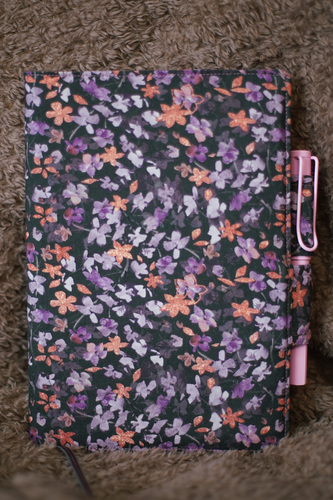
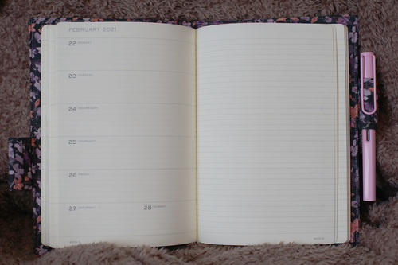
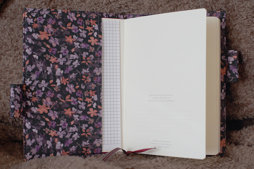

Every year during Hobonichi release season, I'm tempted by these lovely little covers. They're so cute! I've never been able to justify a Hobonichi Techo due to having no plans, but I am pained at not being able to buy covers for my journals! Petit Roses (2022) was the first one I felt most bummed about not having a planner for. So cute, right? I love it!
As you all know, I love to put things off!!! I was so busy drawing boys and put this project off so long that hors went and did it before me. This was good though because I got to steal her wisdom from it. My version is modified off her ideas in a different size. The difference between hors and I is that I do not decorate my journals with stickers or washi tape. This means I have no use for pockets or expanding closures.
Back in October, I finally went to Joanns and bought some interfacing. I think it was the same day that I found the fabric in the remnant pile. Hina will likely get something in this print someday too. I think it's very cute.
I initially intended to make two covers. I wanted one for my Midori 3 Year Diary (the same size as what hors used) and one for my Leuchtturm1917 planner (which I hide my darkest secrets in). I found a really cute flying chicken elastic strap in Seattle that I've been using around my 3 year, which wouldn't fit very well over a cover, so I tossed that plan out the window.
I bought my 2021 Leuchtturm1917 A5 18 month planner for a buck and I love the paper in it. It takes light watercoloring! I've still never tried Tomoe River paper, and will definitely buy an outdated Hobonichi Techo when I see one for a dollar. Unfortunately this hasn't happened yet, so this A5 Leuchtturm is my victim for today. It's hardcover, so I can't say if this cover/interfacing is strong enough for a softcover notebook.
I traced around the cover for a perfect fit, added .5 cm * 2 for top stitching, an extra .5 cm for extra space, and .5 cm * 2 for seam allowance. That came out to a total of 2.5 cm extra to both height and width of the base cover. My two pen loops are 4.5 cm wide. They're centered with approximately 5 mm between.
The interfacing I chose was Pellon 808 Craft-Fuse. I really had no idea what to buy and was pretty overwhelmed at the options. This one didn't stick as strongly as other interfacing I've used in the past, but that could be a me problem.
Assembling this thing is a little scary. I placed the body (right side up), pen holders folded in half with raw edges facing outward, inner pocket (already top stitched), then used a basting stitch. I got this wrong the first time, and the second time didn't get the pen loop perfectly aligned. I checked it around the notebook before moving on.
After this, I placed the body piece with interfacing wrong side up over the pockets. I basted it around except the bottom so I could flip it rightside out. I didn't screw up, so I returned it back to inside out and did normal length stitches. I clipped the corners and flipped it rightside out again. Make sure to get the corners as sharp as possible! I then used a ladder stitch to close the bottom of the cover.
I felt like I only had enough room to do 3 mm topstitching, but I might have had enough room to do 5 as I had originally planned. I think it looks better with a smaller space, so I wish I had done 3 mm on the inside pocket instead. My biggest regret was only leaving .5 cm for the seam allowance. This really sucked because of how tight it was! Don't do it! Use a full 1 cm which will bring the fabric to be 3cm larger than the base cover in both directions instead.
The cover is a fairly close fit with just a little extra space around each side. The pen loops aren't super tight around my LAMY Safari, so there is a little extra space if I did add a couple stickers or embellishments. I don't think they need to be as wide or as long as I made them, but they're fine this way. I reserve the right to change my mind.
I like it a lot! It's a big improvement over the red cover that I wouldn't have chosen myself. Now that I have this power, the possibilities are endless! Only ugly prints are off limits! I need another A5 Leuchtturm.

Small CD haul with (nofoto)